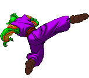
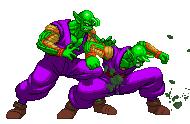
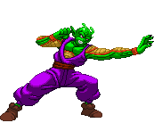
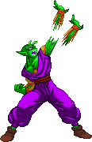

Special Beam Cannon (LV1)
His most famous move. This Super is chargeble.
Piccolo puts his two fingers to his forehead, channeling all his latent energy into them.
There are three stages to this move, each becoming available as you charge it up longer.
Upon releasing the Punch button, Piccolo fires the Special Beam Cannon, his glorious drilling energy attack.
This is sure to pierce through whatever riff-raff energy attack the enemy might throw at you!
While charging, you can teleport with b,b or f,f.
There's a special version when cancelled into from his Destructive Wave to allow it to combo, though that'll only work if you fire it immediately without charging up.
Finally, this is the one and only Super attack that your Clones can perform. More on them later.
There's a special version when cancelled into from his Destructive Wave to allow it to combo, though that'll only work if you fire it immediately without charging up.
Finally, this is the one and only Super attack that your Clones can perform. More on them later.



Demon Thunder Legs (LV1)
Piccolo turns into a kicking whirlwind! He starts with a low sweep,
then works his way up until he's spinning in mid-air and carrying the opponent up with him,
finally kicking them away and slamming them into the wall to end the attack and most likely your combo.
However, Piccolo can cancel out the attack after the 4th kick with an airdash,
after which he is free to initiate a follow-up attack or combo to your own choosing and creativity.

Dark Lord's Army - mirror clones (LV1 / LV2)
Piccolo splits a portion of his energy and creates a perfect duplicate of himself.
These guys will duplicate your movement and attacks as well as they can. They also can take quite a few hits,
though if they are hit by any Super attack from the opponent, that's an insta-kill for them.
-a LK Clone will stay behind you and copy your exact movements and attacks instantly. His Timer drains the slowest.
-a MK Clone will do the same, but do so with a slight delay. His Timer drains the fastest.
-a SK Clone will do so without delay, and in addition to that he will always try to teleport behind the enemy, so you attack from both sides. His Timer also drains pretty fast.
Compared to the prevous Clones (the AI clones), there is no call-back command for these. Since they will mirror your every move. Instead, these Clones will act time-based. When their timer bar is empty, they'll run back to base Piccolo and merge back with him. If you already have one Clone out and you want to create a second one, that's gonna cost you 2 Levels of the Power Bar instead of just 1.
Clones will never do the Mystic Harpoon (or its anti-air variant), instead they will always do the Strong punching version. Also, Clones also can't do EX Specials but they will instead use the strongest variation available to them. Lastly, when in Demon Mode, the Clones can indeed use the Trap Blast, but after traveling to its destination it will explode when it would normally settle. Otherwise they sky would fill up with energy balls just too crazy fast!
Piccolo can now also give his clones Ender Attacks; with a specific input he can make his clone(s) perform a specific attack immediately and after performing it, they'll return to the main Piccolo (regardless of much much of their timer is left). The commands are MP+LK for a Hellzone Granade activation, and MP+SK for a Halo Stomp.
-a LK Clone will stay behind you and copy your exact movements and attacks instantly. His Timer drains the slowest.
-a MK Clone will do the same, but do so with a slight delay. His Timer drains the fastest.
-a SK Clone will do so without delay, and in addition to that he will always try to teleport behind the enemy, so you attack from both sides. His Timer also drains pretty fast.
Compared to the prevous Clones (the AI clones), there is no call-back command for these. Since they will mirror your every move. Instead, these Clones will act time-based. When their timer bar is empty, they'll run back to base Piccolo and merge back with him. If you already have one Clone out and you want to create a second one, that's gonna cost you 2 Levels of the Power Bar instead of just 1.
Clones will never do the Mystic Harpoon (or its anti-air variant), instead they will always do the Strong punching version. Also, Clones also can't do EX Specials but they will instead use the strongest variation available to them. Lastly, when in Demon Mode, the Clones can indeed use the Trap Blast, but after traveling to its destination it will explode when it would normally settle. Otherwise they sky would fill up with energy balls just too crazy fast!
Piccolo can now also give his clones Ender Attacks; with a specific input he can make his clone(s) perform a specific attack immediately and after performing it, they'll return to the main Piccolo (regardless of much much of their timer is left). The commands are MP+LK for a Hellzone Granade activation, and MP+SK for a Halo Stomp.

Seeking Bullet (LV2)
Piccolo fires out a powerful energy beam which is launched out of the screen
after hitting the opponent (or even when they block or dodge it)
and then Piccolo directs it to come back, hitting the opponent from behind for a second string of hits
before smashing onto the ground where it causes an explosion which hits OTG (Off The Ground).
When the opponent is being hit by the beam on the way back, almost all moves will whiff, but a Dead End will hit.
While a Seeking Bullet is onscreen, you are unable to fire another. Power Charge is temporarily disabled as well. All in hopes of keeping a bit of balance.
While a Seeking Bullet is onscreen, you are unable to fire another. Power Charge is temporarily disabled as well. All in hopes of keeping a bit of balance.



Hellzone Grenade (LV3)
After charging energy into both of his hands,
Piccolo then unleashes a volley of Ki orbs into the air.
These form an omnious cloud above the players but these blasts can't harm
the opponent. That is, until you perform the secondary command
which shoots all the orbs towards the opponent!
This command is either a repeat of the activation command (QCBx2+P) or d,d+SP+SK; both work.
If opponent is hit by any of the incoming blasts they'll be trapped and are treated to big damage.
At the end, Piccolo catches them with a Demon Choke.
While in Demon Mode, you can add Trap Blasts to the Ki cloud as you please and these will be added to the hits of the Hellzone Grenade if and when you fire it.
While in Demon Mode, you can add Trap Blasts to the Ki cloud as you please and these will be added to the hits of the Hellzone Grenade if and when you fire it.